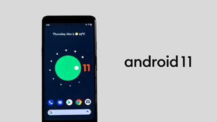

About this Audio
 |
|
RESMI, Borussia Dortmund dapatkan Thomas Meunier dari Paris-Saint Germain secara gratis. Thomas Meunier secara resmi hijrah ke Borussia Dortmund, karena kontraknya tak diperpanjang oleh Les Paris. Dikarenakan, Les Paris sudah tak lagi membutuhkan jasa pemain berumur 28 tersebut. Dortmund, juga dikabarkan santer mencari bek sayap kanan untuk pengganti Achraf Hakimi yang akan hengkang dari Dortmund karena opsi peminjaman bek berusia 22 tahun itu sudah berakhir, dan akan dikembalikan ke Real Madrid. >>> Baca Selengkapnya |
|
CS 1.6 kini bisa dimainkan di Web secara gratis, dan tanpa harus mengunduh ! Hal ini dibenarkan oleh pihak Valve Corporation. Kini, CS 1.6 bisa dimainkan di Web secara gratis, dan tanpa harus mengunduh, dan juga tidak perlu register / login untuk memainkan game ini. Kalian bisa bernostalgia kembali dengan game FPS terbaik sepanjang masa ini. >>> Baca Selengkapnya |
|

Android Versi 11 resmi dirilis pada 3 Juni 2020 ini. Android resmi mengeluarkan versi ke-11 mereka, dan masih tergolong "beta". Hal itu dikarenakan, Android masih menguji coba versi Android tersebut, dan Google mengakui bahwa versi tersebut masih tidak stabil lantaran masih dalam percobaan awal. Versi beta kedua dari Android yang lebih stabil akan meluncur pada Juli 2020 diikuti oleh versi final pada September 2020. Sebagai catatan, peluncuran Android 11 awalnya akan dilakukan di sela-sela gelaran Google I/O 2020 pada 12-14 Mei 2020 di California, Amerika Serikat. Namun, konferensi tahunan yang menampilkan beragam kegiatan tentang produk dan platform pengembang Google itu urung terlaksana lantaran pandemi Covid-19. >>> Baca Selengkapnya |
| Halaman
1 2 3 |